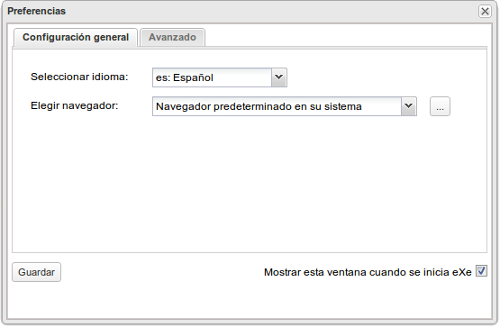
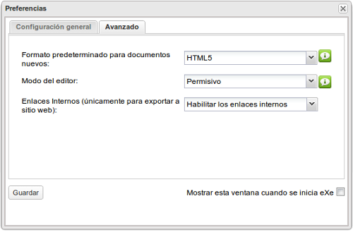

Utilidades
Editor de iDevices
En "Editor de iDevices" nos encontraremos las herramientas necesarias para crear, exportar e importar nuevos iDevices. Estas son opciones avanzadas de usuario de eXe.
Gestor de estilos
En el gestor de estilos podremos importar un estilo no presente en la aplicación, exportar los estilos instalados e incluso borrar aquellos que no nos interesa tener en el listado.
Si borras un estilo y no has guardado copia NO TE PREOCUPES. Puedes volver a instalarlos descargándolos del siguiente enlace.
Preferencias
En "Preferencias" dispondremos de dos pestañas:
1. Configuración general: podremos seleccionar el idioma y el navegador que queremos utilizar para trabajar con eXe.

2. Avanzado:
- Formato predeterminado para documentos nuevos: HTML5 o XHTML. Permite elegir en qué formato crearemos nuestros nuevos archivos por defecto.
- Modo del editor: Permisivo o Estricto. En modo permisivo, el editor aceptará cualquier tipo de código y no eliminará o modificará aquel que no cumpla los estándares HTML5 o XHTML.
- El uso de enlaces internos sólo será válido para exportaciones a sitio web.

Informe sobre recursos
Creará un archivo CSV en donde estarán registrados todos los elementos y archivos contenidos en el elp que se está generando. Esta es una opción orientada a grandes proyectos y de utilidad para creadores avanzados.
Visualización previa
Con esta opción podremos ver una visualización previa en formato HTML de los contenidos creados en eXeLearning.
¡Ojo! es una visualización previa. Para compartir tu trabajo deberás guardarlo y posteriormente exportar al formato que desees.
Actualizar pantalla
Con esta opción haremos la actualización de pantalla de nuestro trabajo.
Obra publicada con Licencia Creative Commons Reconocimiento Compartir igual 4.0